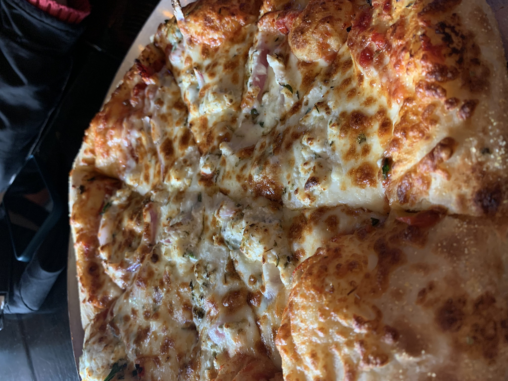
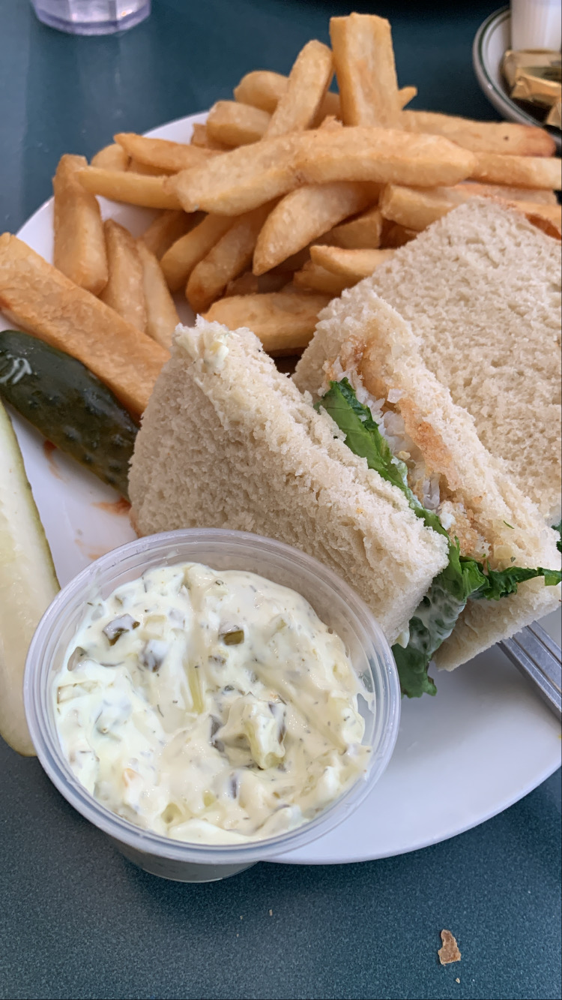

Here are some of the random photos of inspiration and some food photography.
My First Pizza at Ann Arbor
Sunflower Contrast

Fall leaves Colors

Inspiring Graffiti Art
Coffee and croissant

Pancakes for breakfast

Angelo's Fish Sandwich
Indian Street food: Pani Puri

Star from The Gaurdians of the galaxy movie